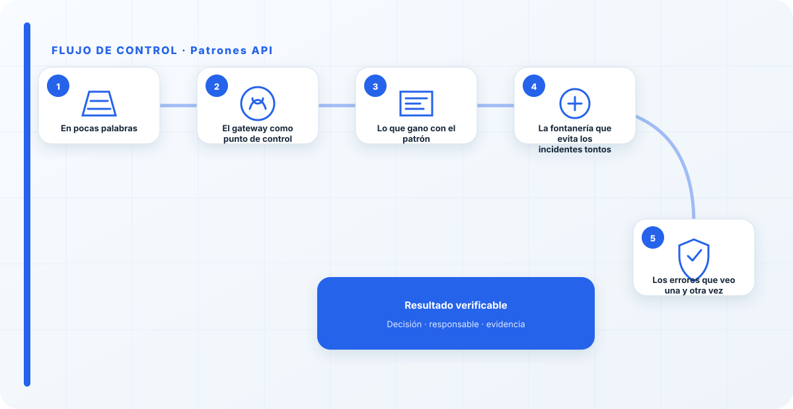
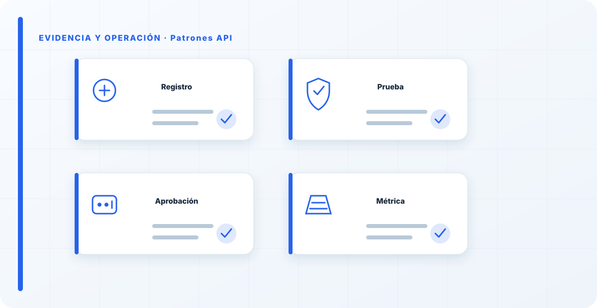

En pocas palabras
Casi ninguna aplicación habla directamente con el modelo, y menos debería: en medio va una capa de API que controla quién llama, con qué límites y hacia qué modelo. Ese patrón —un gateway delante de la inferencia— es lo que convierte un endpoint expuesto en un servicio gobernado. No es vistoso, no sale en las demos, pero es donde se aplican la mitad de los controles de seguridad reales de un sistema de IA.
El gateway como punto de control
Un API gateway delante de los modelos concentra lo que importa en un solo sitio: autenticación y autorización, límites de tasa y de coste, WAF, y enrutado hacia distintos modelos sin que el cliente lo sepa.
Además desacopla, que es una ventaja enorme de mantenimiento: puedes cambiar el modelo de detrás —otra versión, otro proveedor— sin tocar las aplicaciones que lo consumen. Exponer la inferencia directa, sin esta capa, no solo es inseguro; te ata a un modelo concreto y te deja sin ningún punto donde aplicar control.
Lo que gano con el patrón
El gateway es donde aplico el control de acceso, el control de gasto —que en IA se dispara con una facilidad pasmosa si no lo limitas—, y la observabilidad de quién usa qué y cuánto. Es un único punto donde ver y gobernar todo el tráfico hacia tus modelos. Enlaza directamente con el acceso seguro y con el hardening del despliegue.
Concentrar los controles en un sitio tiene otra ventaja: son más fáciles de auditar y de mantener consistentes. Diez aplicaciones cada una con su propio control es diez veces la superficie de error; diez aplicaciones detrás de un gateway es un solo sitio que asegurar bien.

La fontanería que evita los incidentes tontos
Llamo a esto "fontanería" con cariño, porque es exactamente eso: infraestructura poco glamurosa que evita los incidentes más tontos y más frecuentes. El endpoint que quedó expuesto sin querer, la factura que se disparó porque alguien hizo un bucle de llamadas, el modelo llamado por quien no debía. Un buen patrón de API delante de tus modelos te ahorra más disgustos que muchos controles sofisticados de más arriba, precisamente porque cubre lo básico que todo el mundo da por hecho.
La gente subestima esta capa porque no es "IA", es fontanería. Y es justo esa fontanería la que evita los incidentes tontos: el endpoint expuesto, la factura desbocada, el modelo llamado por quien no debía. Un buen patrón de API delante de tus modelos te ahorra más disgustos que muchos controles sofisticados de más arriba.
Los errores que veo una y otra vez
- Exponer la inferencia directamente, sin gateway.
- No poner límites de tasa ni de coste.
- Acoplar las aplicaciones a un modelo concreto.
- Olvidar autenticación y autorización en la capa de API.
- No observar quién llama y cuánto gasta.
Cómo lo llevaría a un entorno real
Cuando aterrizo patrones api en una organización, no empiezo por comprar una herramienta ni por redactar veinte páginas. Empiezo por dibujar qué ocurre hoy: quién solicita el cambio, quién lo aprueba, qué sistemas intervienen, qué datos cruzan el proceso y quién se entera cuando algo falla. Ese dibujo suele descubrir más problemas que cualquier checklist. En arquitectura segura, lo peligroso no es solo carecer de controles; también lo es creer que existen porque alguien los escribió una vez.
Después separo lo imprescindible de lo deseable. Lo imprescindible debe poder comprobarse: un responsable identificado, una regla clara, una evidencia fechada y un mecanismo para reaccionar. En este caso revisaría especialmente Patrones, responsable y control. No me vale una respuesta del tipo «lo gestiona el proveedor» o «eso lo mira seguridad». Necesito saber qué persona toma la decisión, con qué información y dentro de qué plazo.
La implantación debe crecer con el riesgo. Un piloto interno puede funcionar con una ficha breve y una revisión manual. Un sistema que afecta a clientes, empleados, dinero o información sensible necesita segregación de funciones, pruebas independientes, monitorización y un expediente mantenido. Mi criterio es sencillo: cuanto más difícil sea deshacer el daño, más fuerte debe ser la barrera antes de producción.
Decisiones que deben quedar por escrito
Hay decisiones que no deberían vivir en una reunión ni en un mensaje de chat. Para patrones api dejaría documentados el alcance, los supuestos, los límites de uso, las excepciones aceptadas y las condiciones que obligan a detener o reevaluar. El documento no tiene que ser enorme, pero sí debe permitir que otra persona entienda por qué se hizo lo que se hizo.
También registraría quién puede cambiar evidencia, quién valida Patrones y quién recibe las alertas relacionadas con responsable. Cuando esas tres responsabilidades se mezclan, aparece el clásico problema: el mismo equipo construye, aprueba y declara que todo funciona. No siempre se puede separar por completo, sobre todo en organizaciones pequeñas, pero al menos debe existir una revisión por alguien que no dependa del éxito inmediato del despliegue.
Las excepciones merecen un tratamiento propio. Una excepción sin fecha de caducidad acaba convirtiéndose en la arquitectura real. Por eso exigiría motivo, riesgo aceptado, responsable, compensaciones, fecha de revisión y criterio de cierre. Si falta uno de esos elementos, no es una excepción gestionada; es una deuda invisible.

Un ejemplo práctico
Imaginemos que un equipo quiere incorporar patrones api a un servicio que ya está en producción. La propuesta promete reducir tiempos y automatizar tareas, pero utiliza componentes que cambian con frecuencia. Antes de aprobarlo, pediría una prueba limitada, un inventario de dependencias, un flujo de datos y una definición clara de qué acciones quedan fuera del alcance.
Durante la prueba recogería resultados normales y casos límite. No solo miraría si funciona; comprobaría qué ocurre cuando faltan datos, cambia una versión, se pierde conectividad, llega una entrada manipulada o un usuario intenta superar sus permisos. Ahí es donde se ve si el diseño aguanta. En muchas pruebas felices todo parece seguro porque nadie ha intentado romper la hipótesis de partida.
Si los resultados son aceptables, la salida a producción tendría condiciones: versión fijada, configuración aprobada, logs disponibles, responsables de guardia, procedimiento de rollback y revisión tras las primeras semanas. Si alguno de esos elementos no existe, prefiero retrasar el despliegue. Un día de demora suele ser más barato que investigar después un comportamiento que nadie puede reconstruir.
Qué evidencias guardaría
Para demostrar que el control funciona conservaría evidencias que cuenten una historia completa, no capturas sueltas. La historia debe enlazar necesidad, decisión, implementación, prueba y operación. En patrones api eso incluye como mínimo la ficha del activo, el diagrama vigente, la configuración aprobada, el resultado de las pruebas y el registro de cambios.
No guardaría información por acumular. Si los logs contienen prompts, documentos, datos personales o secretos, aplicaría minimización, control de acceso y retención. La evidencia debe ayudar a investigar y auditar sin crear una segunda fuga de información. Es frecuente endurecer el sistema principal y dejar un repositorio de evidencias abierto a demasiadas personas.
- Propietario y finalidad de patrones api, con fecha de revisión.
- Inventario de Patrones, responsable y dependencias asociadas.
- Criterios de aceptación y resultados sobre control y evidencia.
- Configuración efectiva, versión y aprobación del cambio.
- Alertas, incidentes, excepciones y acciones correctivas cerradas.
Señales de que el control no está funcionando
El primer síntoma es que nadie sabe responder con rapidez quién es el responsable. El segundo es que la documentación describe una versión distinta de la que está operando. El tercero es que las alertas existen, pero llegan a un buzón que nadie revisa. Cuando aparecen esos tres síntomas, el problema no es tecnológico: el control se ha desconectado de la operación.
También desconfío de las métricas demasiado perfectas. Cero incidentes, cero excepciones y cien por cien de cumplimiento pueden significar excelencia, pero con frecuencia significan que no estamos mirando. Prefiero indicadores que enseñen tendencia: tiempo de corrección, antigüedad de excepciones, cobertura de pruebas, cambios sin revisión y reincidencias.
Por último, revisaría el comportamiento después de cada cambio significativo. En IA, una actualización de modelo, dataset, prompt, herramienta, permiso o proveedor puede alterar el riesgo sin cambiar el nombre del servicio. Si el proceso solo reevalúa cuando se crea un proyecto nuevo, se quedará ciego durante la mayor parte de la vida útil.
Mi criterio de cierre
Considero que patrones api está razonablemente controlado cuando el equipo puede explicar el proceso sin depender de una sola persona, reconstruir una decisión con evidencias y detener el servicio sin improvisar. No busco perfección documental; busco que la organización pueda tomar decisiones repetibles bajo presión.
El cierre no consiste en marcar todas las casillas. Consiste en demostrar que los riesgos relevantes tienen propietario, que los controles se prueban y que las desviaciones producen una acción. Si la evidencia no cambia ninguna decisión, probablemente estamos generando burocracia. Si una decisión importante no deja evidencia, estamos creando fragilidad.
Este enfoque es el que intento mantener en toda CyberLibrary AI: explicar el control de forma que lo entienda negocio, pero con suficiente profundidad para que arquitectura, seguridad, auditoría y operaciones puedan aplicarlo de verdad.
Referencias y marcos relacionados
Contenido educativo y técnico. No sustituye asesoramiento jurídico ni una auditoría formal.